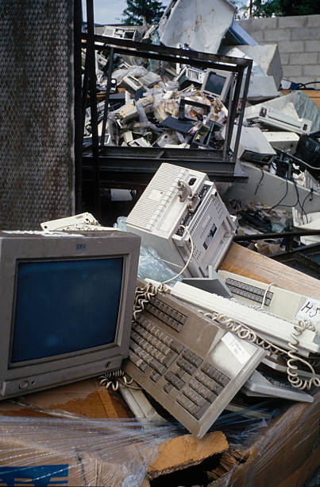
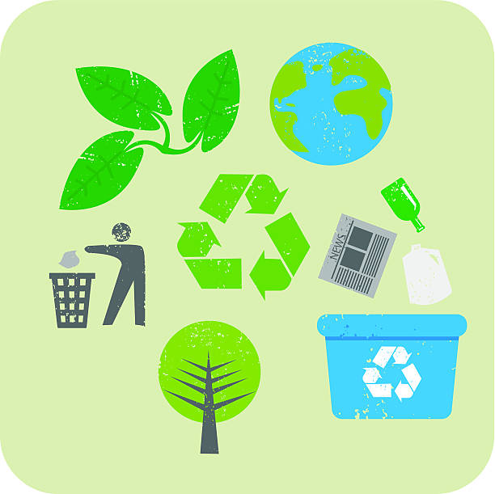

Pequenas escolhas evitam grandes impactos
O descarte correto reduz riscos ao solo, à água e à saúde, além de permitir que materiais valiosos voltem ao ciclo produtivo. Quando aparelhos são encaminhados para reciclagem adequada, metais e plásticos são recuperados, diminuindo a extração de recursos naturais e a emissão de poluentes. Ao separar e entregar seus eletrônicos em pontos de coleta, você ajuda a proteger o meio ambiente e a saúde da comunidade.
Reciclagem e cuidado ambiental

O que é lixo eletrônico?
Lixo eletrônico é todo equipamento elétrico ou eletrônico que deixou de ser útil ao usuário, incluindo celulares, computadores, pilhas, cabos e eletrodomésticos.
Esses resíduos, também chamados de e-lixo ou REEE (Resíduos de Equipamentos Elétricos e Eletrônicos), crescem rapidamente com a obsolescência tecnológica.
Muitos aparelhos contêm substâncias tóxicas como chumbo, mercúrio e cádmio, que podem contaminar solo e água se descartados incorretamente.
Por que descartar corretamente?
O descarte inadequado expõe trabalhadores informais e comunidades a riscos químicos e à poluição ambiental. Quando encaminhados corretamente, componentes valiosos — metais, plásticos e vidro — podem ser recuperados e reinseridos na cadeia produtiva.
A logística reversa e os pontos de coleta são instrumentos essenciais para garantir destino ambientalmente adequado aos equipamentos. A reciclagem exige desmontagem e separação cuidadosa; nem todas as partes são recicladas localmente, exigindo processos especializados.

Como contrinuir?
Reduzir o consumo, prolongar a vida útil, doar e levar a pontos de coleta são ações que diminuem a geração de lixo eletrônico. Políticas públicas, fabricantes e consumidores precisam atuar juntos para ampliar a coleta e a reciclagem no Brasil.
Separar e entregar seus eletrônicos em pontos de coleta protege a saúde pública, conserva recursos naturais e fortalece a economia circular.